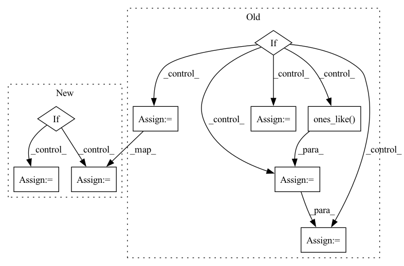

Pattern ID :1198

Before Change
hidden_states = self.weight_proj(hidden_states)
hidden_states = hidden_states.view(batch_size * sequence_length * self.num_groups, -1)
if self.training:
// sample code vector probs via gumbel in differentiateable way
codevector_probs = _ipu_gumbel_softmax(hidden_states.float(), tau=gumbel_temperature, hard=True).type_as(
hidden_states
)
// compute perplexity
codevector_soft_dist = torch.softmax(
hidden_states.view(batch_size * sequence_length, self.num_groups, -1).float(), dim=-1
)
perplexity = self._compute_perplexity(codevector_soft_dist, mask_time_indices)
else:
// take argmax in non-differentiable way
// comptute hard codevector distribution (one hot)
codevector_idx = hidden_states.argmax(dim=-1)
update_values = torch.ones_like(codevector_idx.view(-1, 1), dtype=hidden_states.dtype)
codevector_probs = hidden_states.new_zeros(*hidden_states.shape).scatter_(
-1, codevector_idx.view(-1, 1), update_values
)
codevector_probs = codevector_probs.view(batch_size * sequence_length, self.num_groups, -1)
After Change
)
prob_perplexity = self._compute_perplexity(soft_probs, mask_time_indices)
if self.training:
// sample code vector probs via gumbel in differentiateable way
codevector_probs = _ipu_gumbel_softmax(hidden_states.float(), tau=gumbel_temperature, hard=True).type_as(
hidden_states
)
else:
codevector_probs = hard_probs.type_as(hidden_states)
codevector_probs = codevector_probs.view(batch_size * sequence_length, self.num_groups, -1)
codebook = self.codevectors[0, :, :]
In pattern: SUPERPATTERN
Frequency: 3
Non-data size: 9
Instances
Fragment ID: 6061661
Project Name: huggingface/optimum-graphcore
Commit Name: 2ec4ed72ea362414d20c9b112072f3aa7b3d399a
Time: 2022-07-29
Author: 91201457+thorinf@users.noreply.github.com
File Name: optimum/graphcore/models/wav2vec2/ipu_gumbel_vector_quantizer.py
M Class Name: IPUWav2Vec2GumbelVectorQuantizer
N Class Name: IPUWav2Vec2GumbelVectorQuantizer
M Method Name: forward(4)
N Method Name: forward(4)
M Parent Class: Wav2Vec2GumbelVectorQuantizer
N Parent Class: Wav2Vec2GumbelVectorQuantizer
M File Name: optimum/graphcore/models/wav2vec2/ipu_gumbel_vector_quantizer.py
N File Name: optimum/graphcore/models/wav2vec2/ipu_gumbel_vector_quantizer.py
M Start Line: 68
M End Line: 102
N Start Line: 80
N End Line: 110
'>
Before Change
self.model._train(epoch, save=save,
validate_fn=self.validate_fn, get_data_fn=self.get_data,
save_fn=self.save, **kwargs)
elif self.train_mode == "dataset":
clean_dataset = self.dataset.loader["train"].dataset
_input, _label = next(iter(self.dataset.get_dataloader(
"train", batch_size=int(self.poison_percent * len(clean_dataset)))))
_label = torch.ones_like(_label) * self.target_class
_label = _label.tolist()
poison_input = self.add_mark(_input)
poison_dataset = TensorListDataset(poison_input, _label)
dataset = torch.utils.data.ConcatDataset([clean_dataset, poison_dataset])
loader = self.dataset.get_dataloader("train", dataset=dataset)
self.model._train(epoch, save=save,
validate_fn=self.validate_fn, loader_train=loader,
save_fn=self.save, **kwargs)
After Change
self.model._train(epoch, save=save,
validate_fn=self.validate_fn, get_data_fn=self.get_data,
save_fn=self.save, **kwargs)
elif self.train_mode == "dataset":
dataset = self.mix_dataset()
loader = self.dataset.get_dataloader("train", dataset=dataset)
self.model._train(epoch, save=save,
validate_fn=self.validate_fn, loader_train=loader,
save_fn=self.save, **kwargs)
'>
Fragment ID: 6061662
Project Name: ain-soph/trojanzoo
Commit Name: bdbf67816179497c3bfb09f45ff8a2ff4da1e5c7
Time: 2021-03-11
Author: ain-soph@live.com
File Name: trojanvision/attacks/backdoor/badnet.py
M Class Name: BadNet
N Class Name: BadNet
M Method Name: attack(3)
N Method Name: attack(3)
M Parent Class: Attack
N Parent Class: Attack
M File Name: trojanvision/attacks/backdoor/badnet.py
N File Name: trojanvision/attacks/backdoor/badnet.py
M Start Line: 71
M End Line: 84
N Start Line: 71
N End Line: 77
'>
Before Change
// adjust the step size
new_factor = self.step_mult * (errnorm + 1e-8) ** self.error_exponent
// if accepted and not t1_achieved:
if accepted:
factor = torch.minimum(torch.full_like(new_factor, self.max_factor), new_factor)
if prev_rejected:
factor = torch.minimum(torch.ones_like(factor), factor)
not_t1_achieved = torch.logical_not(t1_achieved)
h[not_t1_achieved] *= factor[not_t1_achieved]
else:
factor = torch.maximum(torch.full_like(new_factor, self.min_factor), new_factor)
h = hstep * factor
prev_rejected = not accepted
After Change
accepted = errnorm < 1
// adjust the step size
if accepted and not t1_achieved:
if errnorm == 0:
factor = self.max_factor
else:
factor = min(self.max_factor, self.step_mult * errnorm ** self.error_exponent)
if prev_rejected:
factor = min(1.0, factor)
h *= factor
elif not accepted:
factor = max(self.min_factor, self.step_mult * errnorm ** self.error_exponent)
h = hstep * factor
prev_rejected = not accepted
'>
Fragment ID: 6061649
Project Name: xitorch/xitorch
Commit Name: d91c4d6e56fb40b9f91fda53f69871e97dcb6abe
Time: 2021-12-30
Author: firman.kasim@gmail.com
File Name: xitorch/_impls/integrate/ivp/adaptive_rk.py
M Class Name: RKAdaptiveStepSolver
N Class Name: RKAdaptiveStepSolver
M Method Name: _single_step(3)
N Method Name: _single_step(3)
M Parent Class: object
N Parent Class: object
M File Name: xitorch/_impls/integrate/ivp/adaptive_rk.py
N File Name: xitorch/_impls/integrate/ivp/adaptive_rk.py
M Start Line: 125
M End Line: 165
N Start Line: 85
N End Line: 122